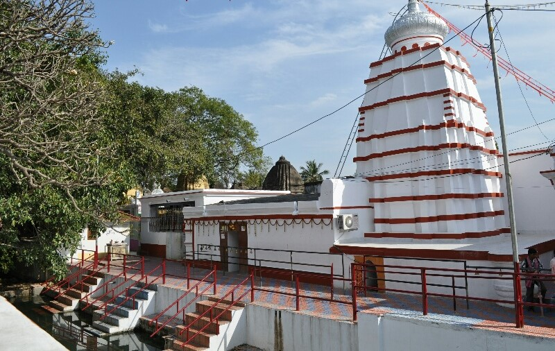
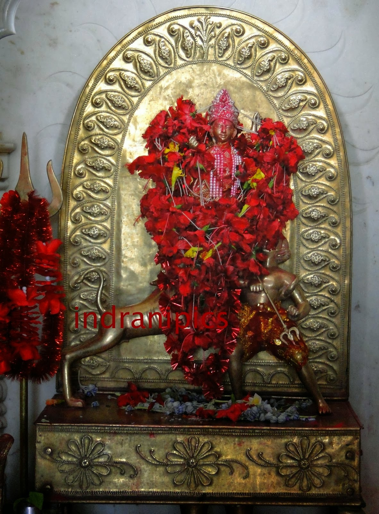

The Bakreswar temple
Bakreshwar (also spelt Bakreswar) is a pilgrimage centre in Birbhum in West Bengal in India. The recently constructed Bakreshwar Thermal Power Station is located at some distance from the temple-complex. In this place only Shakthi's portion between the eyebrows fell down and worshiped as Mahishamardini. Bhairava is Bakranath. Bakreswar is also known for its eight hot springs which has varying temperatures. The hottest of these springs is called Agnikund and it has a temperature of about 93.33℃. It is believed that the water of these springs have healing properties.
Bakreshwar River flows past the town. Bakreswar is around 230 km fom Kolkata.
History

Maa Mahishamardini
According to Hindu belief, an insulted Sati, the wife of Lord Shiva, sacrificed herself at a yagna (fire worship ritual) which was being performed by her father Daksha Maharaj. Angry with this incident Lord Shiva started the tandava nritya (dance of destruction). In order to prevent destruction of all creation, Lord Vishnu used his Sudarshan charka (Wheel) to cut the body of Sati into several parts. Sati's body was scattered to different areas all over which are presently the subcontinents' of India. There are 51 such holy spots where temples have been erected and they are called Pithas or the Shakti Pithas. Some of the Pithas are in West Bengal. The most popular of them are Kalighat (in Kolkata), Bakreshwar and Tarapith. Bakreswar is said to be the pitha where Sati's forehead and eyebrows fell.The main temple is of Shiva which is more popular as Bakranath. In architectural style it is akin to the “rekha-deul” of Odisha. Numerous Shiva temples surround the main temple, and a large number of temples are without any image. According to legend, the disfigured and disconsolate Astabkra (also known as the sage Lomas), out on a pilgrimage, arrived at Kasi (Varanasi) intent on worshipping Shiva. He was informed that his prayers could not be answered till they were offered at an undefined spot named Gupta Kasi (the hidden Varanasi) in the distant realm of Gaur (Bengal). Astabakra took to an eastern direction and ended at Bakreswar, where he adored Shiva for ten thousand years. The god, touched by the persistence of his votary, declared that those who worship Astabakra first and himself afterwards would be vouchsafed an endless store of blessings. Viswakarma, the architect of the gods, received a command to erect a temple on the auspicious spot, and a stately shrine soon rose on the eastern shore of the river Bakreswar containing two graven images, the larger of which represented Astabakra. There is no evidence of the present temple being such an ancient one. A tablet records that a portion of the edifice was erected by one Darpanarayan in the year 1761 A.D. There are eight hot springs of varying temperatures. The hottest, known as the Agni Kundu, is not far short of 200 degrees Fahrenheit. It is said that the water has healing powers. There is a large pond for bathers. Some piped water is also available for those who do not desire to get down into the pond.
HOW TO COME
Bakreswar is located on the Suri-Dubrajpur Road. There are two such roads - one via Chhinpai (near the power station) and the other via Bakreswar. The latter is the lesser used and slightly longer route. Buses ply on this route. Both Dubrajpur and Siuri are on the Andal-Sainthia branch line.
GET AROUND
It is a small place. one has to walk around the village to enjoy its scenic beauty.
Must Do:
☉ Have a good and refreshing bath in the hot water pond.
☉ Go to Bakreswar Riverside, Maha-samshan.
☉ Go to Basudeb Mission International to see Shiva Lingam of Fire Basudebbakreswaraya, made of 7 tons of white Carrara marble.
Hot Springs:
☉ Paphara ganga.
☉ Baitarini ganga.
☉ Khar kunda :
- The water in this spring is of 66 degrees Celsius.
☉ Bhairav kunda :
☉ Agni kunda :
- Agni means fire. The water in this spring is at 80 degrees Celsius. It is also rich in many minerals of sodium, potassium, calcium, silicates, chlorides, bicarbonates and sulphates which are said to have medicinal properties. It might also contain traces of radioactive elements.
☉ Dudh kunda :
- Dudh means milk. The water of this spring attains a dull white hue during early morning probably due to ozone concentration. The water in this spring is at 66 degrees Celsius.
☉ Surya kunda :
- Surya means sun.The water in this spring is of 61 degrees Celsius.
☉ Shwet ganga.
☉ Brahma kunda.
☉ Amrita kunda.
Temples:
☉ Bakreswar Temple(Main Temple).
☉ Maa Mahisasur-Mardini Mandir.
☉ Maa Bhavatarini Mandir.
☉ Bhairabnath Temple.
Buy:
☉ Nothing special. There are many shops trying to attract attention of the pilgrim-tourists. One can always have a look. Beside Bakreshwar in the village Tantipara, there are a large number of handlooms can be seen.Variety of silk products available here. Many visitors take a short tour to Tantipara- "The village of Handloom products".
Eat:
☉ There are many small eateries serving Bengali food and snacks. Bakreswar is mainly famous for its Khire-singara and Rosogolla. So, rosogollas and khire-singaras are a must try thing in Bakreswar.
Drink:
☉ No taboos. Carry your own stock, if you are particular about it. You can got it from near Village Tantipara.